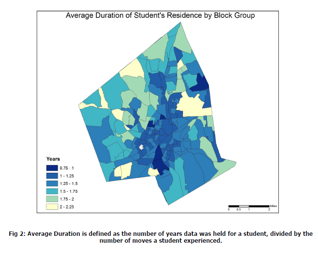
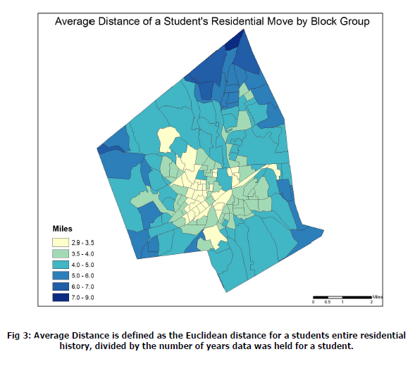

GEOG 296 - Advanced Raster GIS, Final Group Project
The purpose of this project is to examine the dynamics of land change related to Texas agriculture. We aim to analyze the change in land cover in the state of Texas between 2001 and 2006. We hope to explore possible explanatory variables related to land change, and produce a predicted land change map for 2011. The prediction map will be compared to a reference land use map of 2011 in Texas. Our results will shine a light on how the landscape and agriculture in Texas have changed and will continue to change in the future. Click here for full Project Precis!
GEOG 190 - Intro to GIS, Final Project
This study is a GIS-based analysis of gentrification in the City of Austin using vector digital data. The study covers changes since the year 2000. I will examine how geographic resources and places of interest to younger, “hip”, educated, artsy populations fosters this change. I am interested in where Gentrification in Austin is most prominent. I propose that areas identified to be highly gentrified will be spatially close to hip establishments and easy to travel to by bike. Click here for entire paper!

